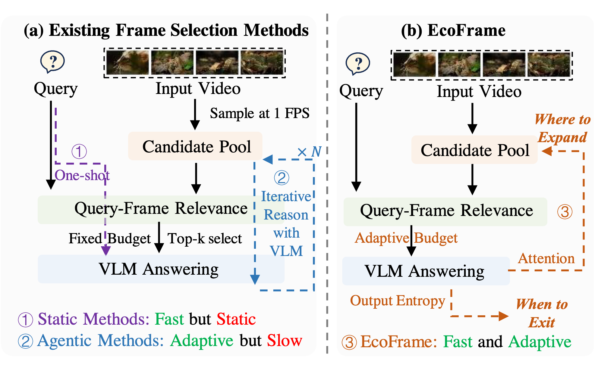
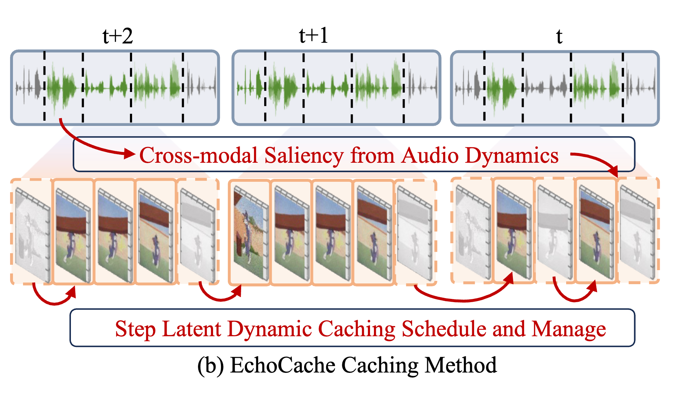
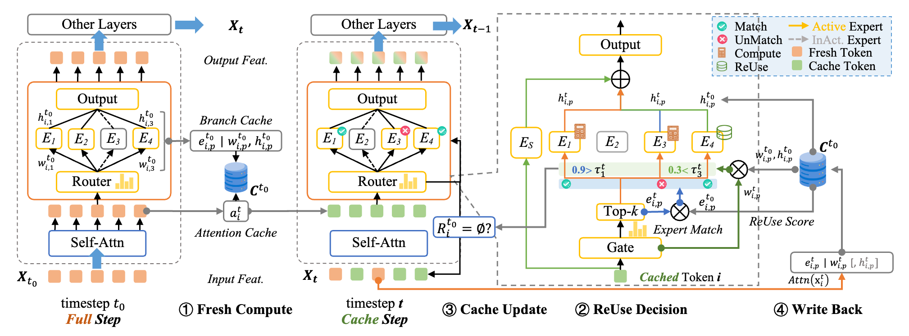
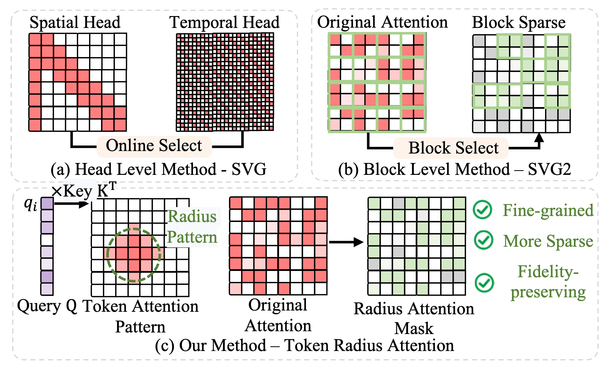
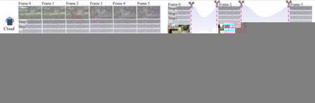
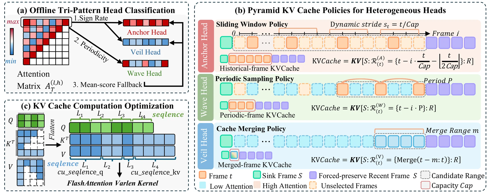
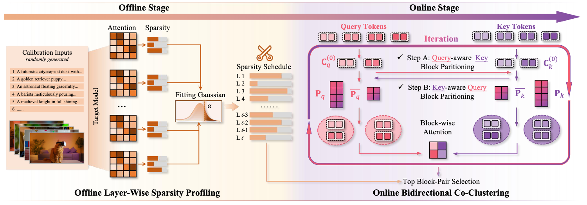
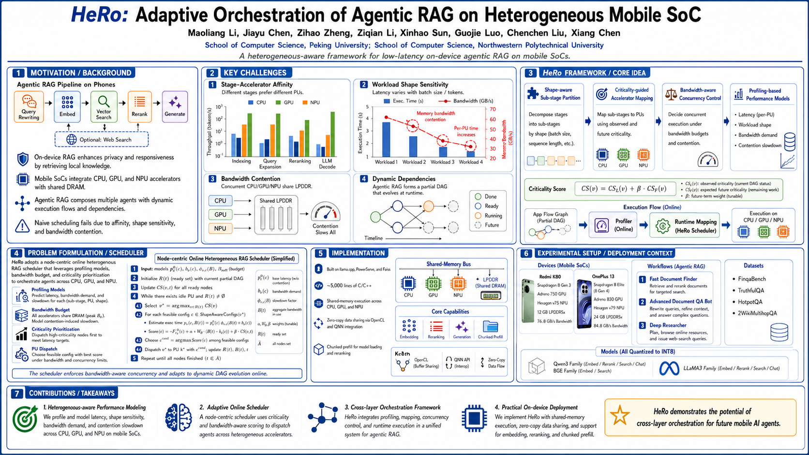

About
News
- 2026/07 Two papers on Adaptive Caching for Diffusion Transformer are accepted by ACM MM 2026!
- 2026/06 One paper on Cloud-Edge Collaborative Video Generation is accepted by ECCV 2026!
- 2026/04 One collaborative paper on Sparse Attention for Video Generation is accepted by ICML 2026!
- 2026/02 One paper and two collaborative papers on Hardware-Software Co-Design are accepted by DAC 2026!
- 2026/01 One paper on Token Pruning for VAR Models is accepted by ICLR 2026!
- 2025/11 One collaborative paper on Quantization for MoE Models is accepted by DATE 2026!
Experiences
 Sep, 2025 - Present
Sep, 2025 - Present
 Jan, 2024 - Jul, 2024
Jan, 2024 - Jul, 2024
Publications ( / )

When and Where to Look: Adaptive Visual Evidence Scheduling for Efficient Long Video Understanding
Arxiv 2026

EchoCache: Energy-Guided Cross-Modal Caching for Efficient Audio-Driven Video Generation
ACM MM 2026, CCF-A

MoECa: Aligning Feature Reuse with Expert Decomposition in Diffusion Transformers
ACM MM 2026, CCF-A

Token Radius Attention for Efficient Video Generation
Arxiv 2026

EcoVideo: Entropy-Orchestrated Video Generation Paradigm in Cloud-Edge Dynamics
ECCV 2026, CCF-B

Pyramid Forcing: Head-Aware Pyramid KV Cache Policy for High-Quality Long Video Generation
Arxiv 2026

Attention Sparsity is Input-Stable: Training-Free Sparse Attention for Video Generation via Offline Sparsity Profiling and Online QK Co-Clustering
ICML 2026, CCF-A

ToProVAR: Efficient Visual Autoregressive Modeling via Tri-Dimensional Entropy-Aware Semantic Analysis and Sparsity Optimization
ICLR 2026, CCF-A

HeRo: Adaptive Orchestration of Agentic RAG on Heterogeneous Mobile SoC
DAC 2026, CCF-A